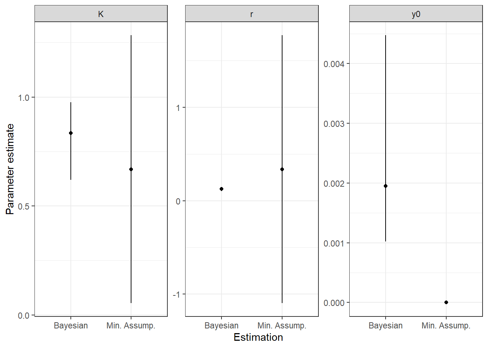
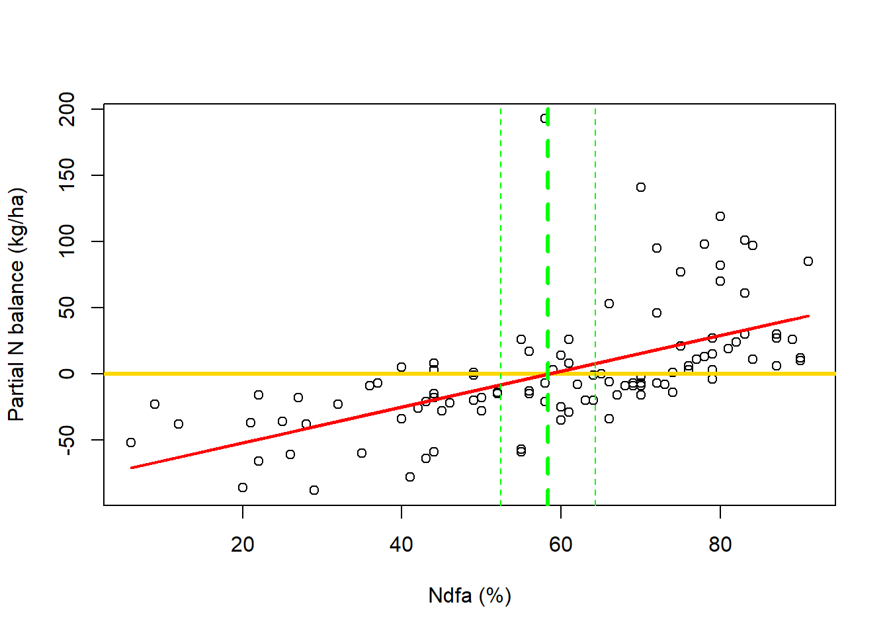
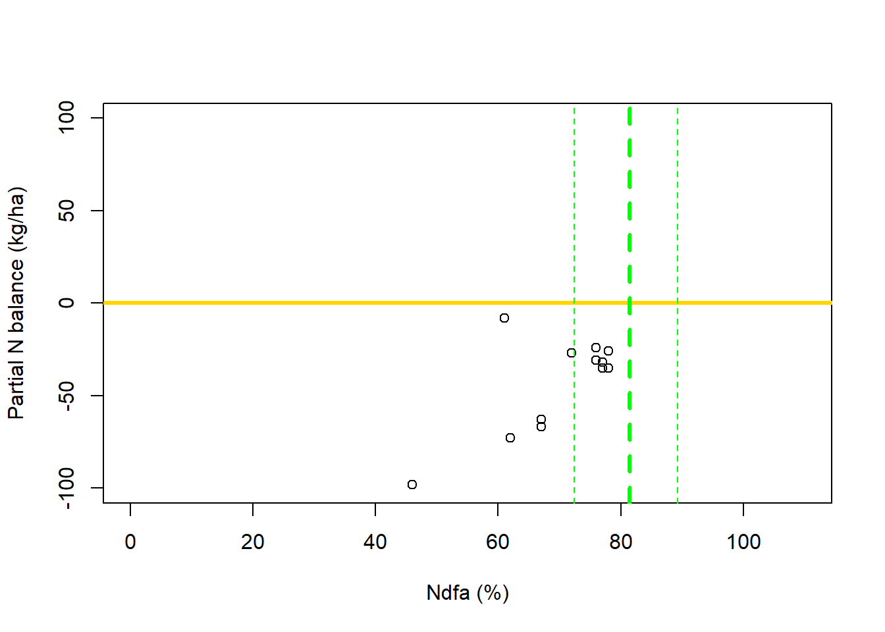

Welcome to day 3!!!
What have we learned so far?
Day 1
What is and what isn’t a linear model.
Estimation approaches: Loss function; Likelihood-based; Bayesian.
When they are similar.
Day 2
Linearization -> From a curve, to a line… to a curve.
Mechanistic and Phenomenological models -> Describe what causes patterns vs Describe the patterns.
Practical identifiability of parameters -> When our data cannot inform our model parameters.
- How to work with weak identifiability.
Bayesian Nonlinear models
Outline:
Section 5: Exercises from day 2
- Model selection, why?
Section 6: Bayesian nonlinear models
- Bayesian logistic disease progress curve
- Why Bayesian might be helpful?
Wrap-up
What we expect you to learn on Day 3:
We have different approaches for choosing the mathematical model, however, once these models have biological meaning, this should be the most important to consider.
Bayesian models expand what we did before by adding more assumptions.
The way we write Bayesian models make these assumption explicit.
A prior distribution is built based on what we already know (prior knowledge), and it helps constraining our model parameters.
Constraining the parameters with prior knowledge helps to remedy weak identifiability.
Section 5: Exercises from day 2
Why logistic?
For 2023, fit the nonlinear logistic model to variety a and b. Extract \(K\) and \(r\) and check how genetic resistance affect these parameters.

| Variety | K | r |
|---|---|---|
| a | 0.6684032 | 0.3361402 |
| b | 0.5085910 | 0.3623941 |
Repeat the previous question, but now, for 2024.
How did it go? More specifically, where you able to fit it for variety b?
What we have:

What we expect:

- The blue line represents an exponential mathematical model:
\[ y_i = y_0*e^{r_e*x_i} \]
Why don’t we use this model instead? I have been pushing the logistic model for this data, even if it might not be the one that “best fit” it. Why?
- Discussion
Highlight from Section 5:
Section 6: Bayesian nonlinear models
We need more assumptions, one of our parameters is non-identifiable.
A parallel with day 2:
When data was insufficient, we made assumptions:
\(K = 1\) + Nonlinear logistic model.
\(K = 1\) + Linearization.
Assume the nonlinear relationship is well approximated by a linear one.
Assume inference on linearized model parameters is equivalent to the nonlinear.
Mechanistic meaning of the nonlinear model is preserved.
*Bayesian makes assumptions explicit vs previous approaches.
What have we been doing so far with the logistic model (now depicted by distributional notation)?
\[ y_i \sim N(\mu_i, \sigma^2) \\[10pt] \mu_i = \frac{K}{1+(\frac{K-y_0}{y_0})*e^{-r*x_i}} \]
This is not Bayesian.
This is not working because of weak identifiability.
But we want this logistic equation, so let’s make more assumptions!
Bayesian logistic disease progress curve
The first assumption we can make regards our response variable!
“If you are already in the rain, do not fear getting wet!”
Is our model matching the data generating process?
Severity = Proportion -> Bounded 0 - 1
Beta distribution (Beta regression - Ferrari & Cribari-Neto, 2010).
\[ y_i \sim Beta(\mu_i, \phi) \\[10pt] \mu_i = \frac{K}{1+(\frac{K-y_0}{y_0})*e^{-r*x_i}} \]
This still not Bayesian. We are just choosing a more appropriate distribution for our response variable.
- We can do that using likelihood-based estimation.
Now, let’s get Bayesian!
We will treat our unknown quantities (parameters) as random variables. How does it work?
Recall the assumption: \(K = 1\)
It is the same as: \(K \sim N(1, 0)\)
- This is the strongest and most restrictive assumption!
If we “relax” this assumption, and let \(K\) vary a little more, let’s say \(K \sim N(1, 5)\), this what happens:

Now, do you think these values make sense?
\(K\) has a biological meaning - Maximum disease potential.
What if we impose a constraint on this parameter?
\[ K \sim Beta(6, 2) \]

How we are choosing that?
Beta distribution - Bounds - Support helps a lot!
Leaning towards higher values - \(K\) represents the maximum disease potential.
Let it vary from very small maximum to the maximum possible (1).
This is what we call prior distribution, we use prior knowledge to inform unknown quantities in the model.
“Before we see the data, what values we expect this parameter to assume?”
Priors are constructed using:
Expert knowledge.
Published information.
Simulation/previous studies.
We end up with this Bayesian model:
\[ y_i \sim Beta(\mu_i, \phi) \\[10pt] \mu_i = \frac{K}{1 + (\frac{K - y_0}{y_0})*e^{-r*x_i}} \\[20pt] K \sim Beta(6, 2) \\[10pt] y_0 \sim Unif(0.001, 0.1) \\[10pt] r \sim Unif(0.1, 0.5) \\[10pt] \phi \sim Gamma(24, 2) \]
Let’s fit the model for the variety b in 2024:
Code
library(rjags)
library(coda)
set.seed(2026)
y <- df[which(df$year == 2024 & df$var == "b"),]$p_sev + 0.001
x <- df[which(df$year == 2024 & df$var == "b"),]$time
N <- nrow(df[which(df$year == 2024 & df$var == "b"),])
x.pred <- seq(1, max(x)+20, by = 1)
N_pred <- length(x.pred)
# JAGS code
data_line <- list("y" = y, "x" = x, "x.pred" = x.pred, "N" = N, "N_pred" = N_pred)
initials <- list(
list("K" = 0.7, "r" = 0.2, "y0" = 0.001, "phi" = 10)
)
model_string <- "model {
# Likelihood
for(i in 1:N){
y[i] ~ dbeta(alpha[i], beta[i])
alpha[i] <- (K/(1 + ((K-y0)/y0)*exp(-r*x[i])))*phi
beta[i] <- (1-(K/(1 + ((K-y0)/y0)*exp(-r*x[i]))))*phi
}
# Posterior pred.
for(z in 1:N_pred){
y_pred[z] ~ dbeta(alpha_pred[z], beta_pred[z])
alpha_pred[z] <- (K/(1 + ((K-y0)/y0)*exp(-r*x.pred[z])))*phi
beta_pred[z] <- (1-(K/(1 + ((K-y0)/y0)*exp(-r*x.pred[z]))))*phi
}
# Priors
y0 ~ dunif(0.001, 0.1)
K ~ dbeta(6, 2)
r ~ dunif(0.1, 0.5)
phi ~ dgamma(24, 2)
}"
m1 <- jags.model(textConnection(model_string), inits = initials, data = data_line, n.chains = 1)
update(m1, n.iter = 10000)
samples <- coda.samples(m1, variable.names = c("K", "y0", "r", "phi", "y_pred"), n.iter = 10000)
# Extract draws
## Parameters
par_post <- as.matrix(samples[,c(1, 2, 3, 4)])
## Predictions
pred_post <- as.matrix(samples[,c(5:61)])How the predictions (expected value) looks like with 95% Posterior Predictive Interval7:
Code
# Quantiles for 95% Credible Interval
quant <- apply(pred_post, 2, quantile, probs = c(0.025, 0.975))
# DF for prediction
bay_pred <- data.frame(
y.pred = colMeans(pred_post),
y.lb = quant[1,],
y.ub = quant[2,],
x.pred = x.pred
)
# Plot prediction
plot(bay_pred$x.pred, bay_pred$y.pred, type = "l", ylab = "Pred. severity (mean)", xlab = "Days", ylim = c(-0.1, 1.1), lwd = 3, col = 'red')
lines(bay_pred$x.pred, bay_pred$y.lb, lty = 2, lwd = 3, col = 'red')
lines(bay_pred$x.pred, bay_pred$y.ub, lty = 2, lwd = 3, col = 'red')
abline(h = 1, lty = 3, col = 'black', lwd = 2)
abline(h = 0, lty = 3, col = 'black', lwd = 2)
How about the parameters?
Code
par(mfrow = c(2, 2))
# For K
hist(par_post[,1], ylab = "[K]", xlab = "K", main = "Post. dist. K", freq = FALSE)
abline(v = mean(par_post[,1]), lty = 2, lwd = 3, col = 'red')
# For r
hist(par_post[,3], ylab = "[r]", xlab = "r", main = "Post. dist. r", freq = FALSE)
abline(v = mean(par_post[,3]), lty = 2, lwd = 3, col = 'red')
# For y0
hist(par_post[,4], ylab = "[y0]", xlab = "y0", , main = "Post. dist. y0", freq = FALSE)
abline(v = mean(par_post[,4]), lty = 2, lwd = 3, col = 'red')
par(mfrow = c(1, 1))
How posterior compare to prior?
Let’s look at \(r\).
Recall: \(r \sim Unif(0.1, 0.5)\)
Code

Code

Why Bayesian might be helpful?
- Let’s use variety a in 2023 for and example.
Code
#### Fit the Bayesian model for 2024 var a ####
set.seed(2026)
library(rjags)
y <- df[which(df$year == 2023 & df$var == "a"),]$p_sev + 0.001
x <- df[which(df$year == 2023 & df$var == "a"),]$time
N <- nrow(df[which(df$year == 2023 & df$var == "a"),])
x.pred <- seq(1, max(x)+20, by = 1)
N_pred <- length(x.pred)
# JAGS code
data_line <- list("y" = y, "x" = x, "x.pred" = x.pred, "N" = N, "N_pred" = N_pred)
initials <- list(
list("K" = 0.7, "r" = 0.2, "y0" = 0.001, "phi" = 10)
)
model_string <- "model {
# Likelihood
for(i in 1:N){
y[i] ~ dbeta(alpha[i], beta[i])
alpha[i] <- (K/(1 + ((K-y0)/y0)*exp(-r*x[i])))*phi
beta[i] <- (1-(K/(1 + ((K-y0)/y0)*exp(-r*x[i]))))*phi
}
# Posterior pred.
for(z in 1:N_pred){
y_pred[z] ~ dbeta(alpha_pred[z], beta_pred[z])
alpha_pred[z] <- (K/(1 + ((K-y0)/y0)*exp(-r*x.pred[z])))*phi
beta_pred[z] <- (1-(K/(1 + ((K-y0)/y0)*exp(-r*x.pred[z]))))*phi
}
# Priors
y0 ~ dunif(0.001, 0.1)
K ~ dbeta(6, 2)
r ~ dunif(0.1, 0.5)
phi ~ dgamma(24, 2)
}"
m2 <- jags.model(textConnection(model_string), inits = initials, data = data_line, n.chains = 1)
update(m2, n.iter = 10000)
samples <- coda.samples(m2, variable.names = c("K", "y0", "r", "phi", "y_pred"), n.iter = 10000)
# Extract draws
## Parameters
par_post <- as.matrix(samples[,c(1, 2, 3, 4)])
## Predictions
pred_post <- as.matrix(samples[, c(5:77)])Code
#### Fit the model using likelihood to 2023 var a ####
a_24 <- df[which(df$var == "a" & df$year == 2023),]
# Fit the model
m3 <- nls(p_sev ~ K/(1+((K-y0)/y0)*exp(-r*time)), start = c(K = 0.7, r = 0.2, y0 = 0.001), data = a_24)
# Predictions with prediction interval
df_pred <- data.frame(
time = seq(1, max(a_24$time)+20, by = 1)
)
library(mvtnorm) # Package for multivariate normal
set.seed(2026)
ite <- 10000 # Number of iterations/simulations
par_hat <- coef(m3) # Extract parameter estimated
var_cov <- vcov(m3) # Extract var covar matrix
sigma_hat <- summary(m3)$sigma # Extract standard deviation
par_sim <- rmvnorm(ite, par_hat, var_cov) # Simulate parameters - Draws from a multivariate normal using our expected value for the parameter and their variance
time <- df_pred$time
sim.save <- matrix(nrow = ite, ncol = length(time))
for(i in 1:ite){
K <- par_sim[i,"K"]
y0 <- par_sim[i, "y0"]
r <- par_sim[i, "r"]
mu <- K/(1+((K-y0)/y0)*exp(-r*time))
y_sim <- rnorm(length(time), mu, sigma_hat)
sim.save[i,] <- y_sim
}
# Prediction + pred intervals on the df
df_pred$pred <- predict(m3, newdata = df_pred)
df_pred$pred_ub <- apply(sim.save, 2, quantile, 0.975)
df_pred$pred_lb <- apply(sim.save, 2, quantile, 0.025)Code
# Plot predictions with interval for iid normal assumption
plot(a_24$time, a_24$p_sev, ylab = "Severity (prop.)", xlab = "Days", main = "Likelihood approach with minimal assumptions", ylim = c(-0.5, 1.1))
lines(df_pred$time, df_pred$pred, lwd = 3, col = 'red')
lines(df_pred$time, df_pred$pred_ub, lty = 2, col = 'red')
lines(df_pred$time, df_pred$pred_lb, lty = 2, col = 'red')
Code
# Plot predictions with interval for Bayesian model
# Quantiles for 95% Credible Interval
quant <- apply(pred_post, 2, quantile, probs = c(0.025, 0.975))
# DF for prediction
bay_pred <- data.frame(
y.pred = colMeans(pred_post),
y.lb = quant[1,],
y.ub = quant[2,],
x.pred = x.pred
)
# Plot prediction
plot(x, y, ylab = "Severity (prop.)", xlab = "Days", main = "Bayesian model", ylim = c(-0.1, 1.1))
lines(bay_pred$x.pred, bay_pred$y.pred, lwd = 3, col = 'red')
lines(bay_pred$x.pred, bay_pred$y.lb, lty = 2, col = 'red')
lines(bay_pred$x.pred, bay_pred$y.ub, lty = 2, col = 'red')

How about the parameters?

| Estimation | Parameter | Estimate | Est_lb | Est_ub |
|---|---|---|---|---|
| Min. Assump. | K | 0.6684032 | 0.0534314 | 1.2833750 |
| Min. Assump. | r | 0.3361402 | -1.0979691 | 1.7702495 |
| Min. Assump. | y0 | 0.0000002 | -0.0000130 | 0.0000134 |
| Bayesian | K | 0.8373933 | 0.6215388 | 0.9759940 |
| Bayesian | r | 0.1248179 | 0.1034910 | 0.1436171 |
| Bayesian | y0 | 0.0019061 | 0.0010174 | 0.0042941 |
Highlight from Section 6:
Prior knowledge involves what we already now before even seeing the data.
Prior distributions are selected based in prior knowledge. We treat parameters as random variables that arise from probability distributions.
A straight forward to check if a distribution make sense for a parameter or the data generating process involves understand it’s support.
Bayesian models do not “resolve” weak identifiability, but remedy it by constraining parameters using prior knowledge.
In Bayesian models, prior distribution is “updated” by the observed data, resulting in the posterior distribution.
Bayesian models are heavy in assumptions, but also very explicit about them.
By mindful! Assumptions introduce bias, therefore, they need to be deeply considered.
Making more assumptions is adequate to mitigate deficiencies in the data. If there are none, there is no reason not to use the simple. As you learned, it works just the same!
Wrap-up
There is no right or wrong! There are different assumptions, and each carry advantages and disadvantages.
Choosing assumptions should be done consciously, keeping in mind that they might change the analysis results, and how you make inference.
Bayesian is not a better approach. It is another tool in your toolbox, and might be helpful in some situations.
Before: Less uncertainty = More data
Now: Other options -> Less uncertainty = More assumptions
All workshop material is available on this page. Feel free to contact us as well if you have questions!
Thank you very much for you attention and for attending this workshop, this was a great opportunity for us all to learn more together! Stay tuned for the next workshop “Bayesian Modeling of Designed Experiments” on March 2, 4, and 5.